Быстрое добавление в корзину Faster cart additions
- КлиентClient
- ВкусВилл
- ФорматFormat
- Концепт-проектConcept project
- РольRole
- UX-исследование, дизайнUX research, design
- ГодYear
- 2026
Корзина — тупикThe cart is a dead end
ПроблемаProblem
Корзина в её текущем виде — это тупик. Она отрезает пользователя от всего ассортимента в самый ответственный момент, создавая барьер для спонтанных и «забытых» покупок. The cart as it stands is a dead end. It cuts the user off from the whole catalogue at the most decisive moment, creating a barrier to spontaneous and forgotten purchases.
ЗадачаTask
Спроектировать и внедрить изменения в интерфейс корзины, которые позволят пользователю добавлять новые товары, не покидая экрана корзины. Design and ship changes to the cart interface that let users add new items without leaving the cart screen.
Screen FlowScreen Flow
Для начала рассмотрела весь путь пользователя с помощью Screen Flow: от выбора шаблона прошлого заказа до его оплаты, уделяя особое внимание моменту, когда пользователю нужно добавить к этому списку забытый или новый товар. First I mapped the full user journey with a Screen Flow — from picking a past order template to paying for it — paying close attention to the moment a forgotten or new item needs adding to that list.
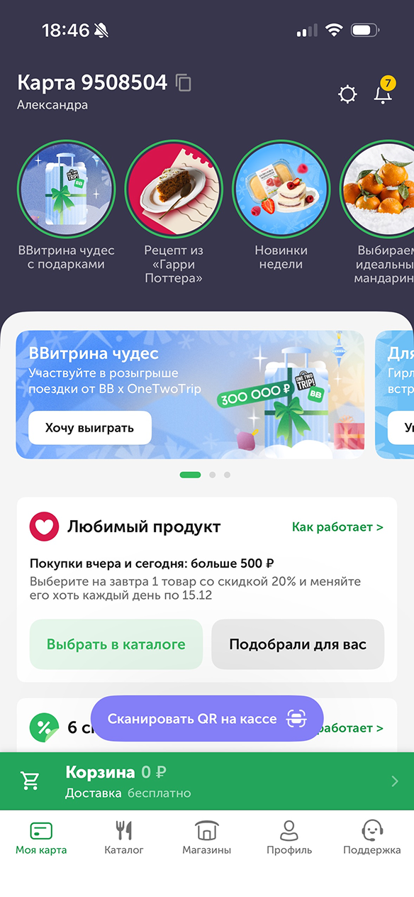
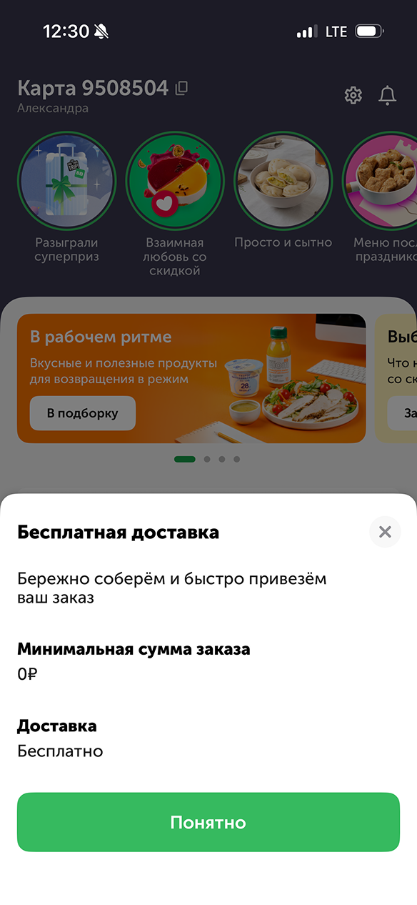
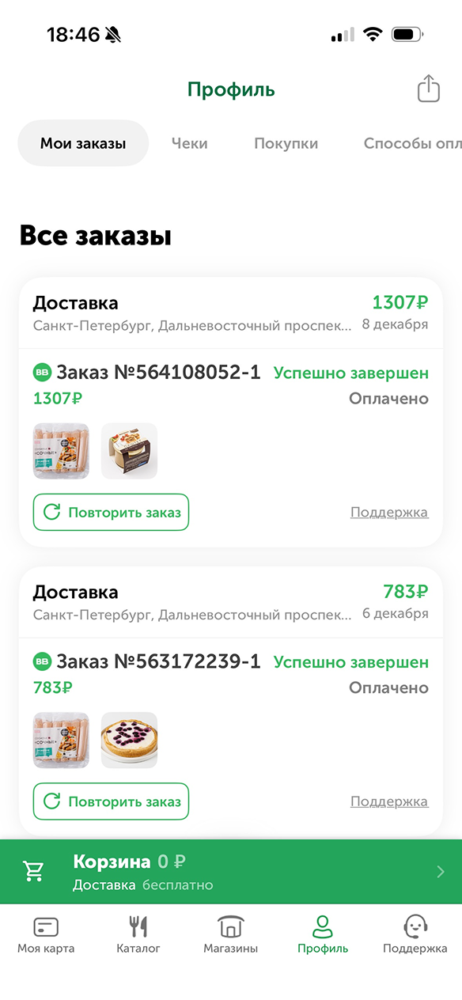
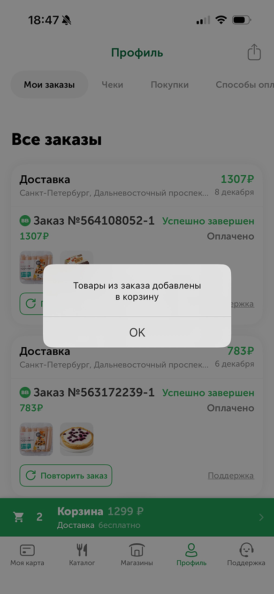
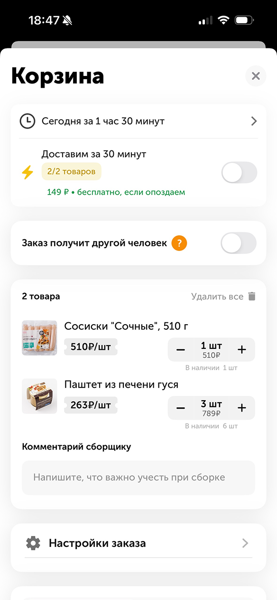
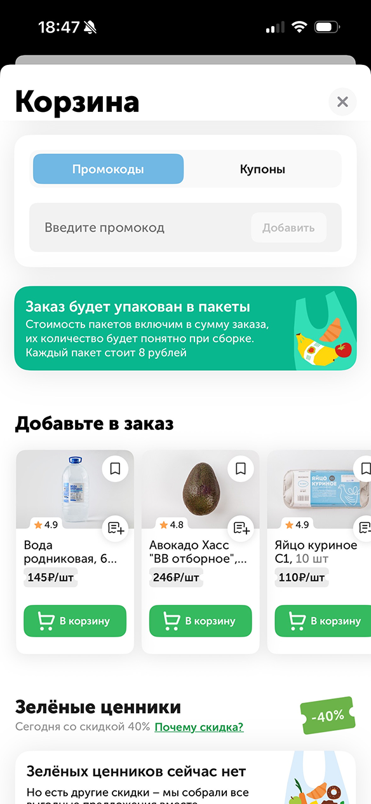
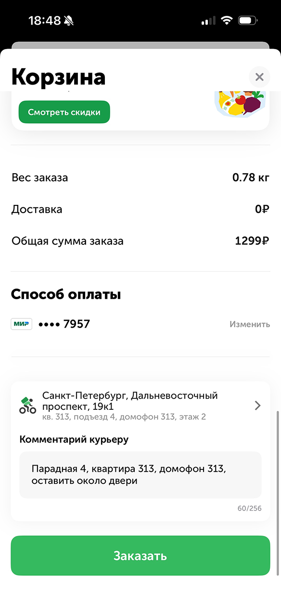
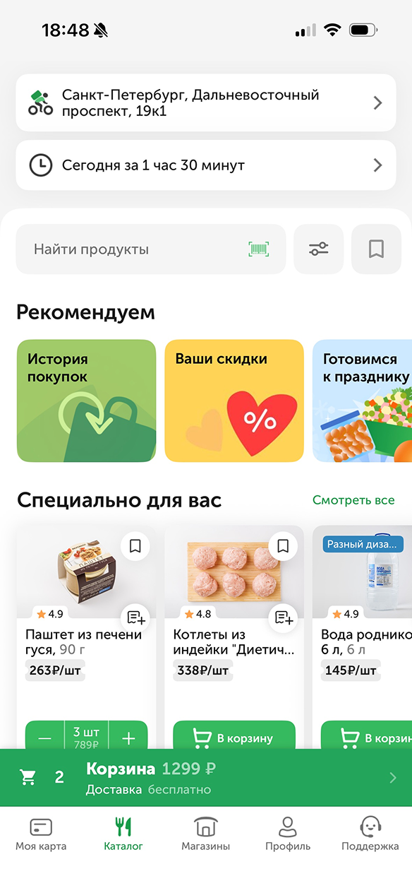
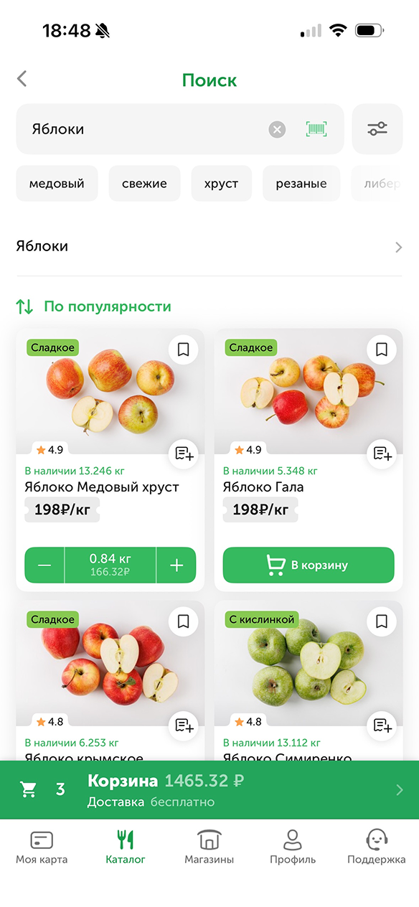
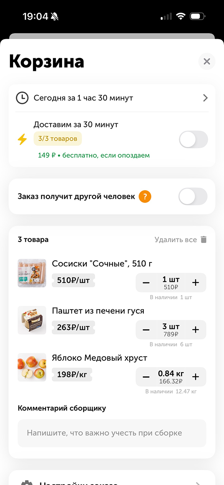
Ключевые инсайты из Screen Flow Key insights from the screen flow
Кнопка корзины на главном экране не ведёт в корзину, если в неё не добавлены продукты. Вместо этого появляется информация о доставке. The cart button on the home screen doesn't open the cart when it's empty — it shows delivery info instead.
При повторении прошлого заказа продукты добавляются в корзину, но корзина не открывается — для этого нужно делать дополнительные шаги. Reordering adds the products to the cart, but the cart doesn't open — that takes extra steps.
Из корзины нельзя быстро добавить забытый продукт — для этого необходимо вернуться в каталог товаров. You can't quickly add a forgotten product from the cart — you have to go back to the catalogue.
ГипотезыHypotheses
После аудита приложения я перешла к формулированию гипотез, направленных на улучшение пользовательского взаимодействия с приложением. After auditing the app I moved on to formulating hypotheses aimed at improving how users interact with it.
Гипотеза №1 · RetentionHypothesis No. 1 · Retention
Если сократить количество шагов в процессе «Повторного заказа», то это увеличит показатель удержания, поскольку позволит постоянным клиентам оформлять привычные заказы быстрее и с меньшими усилиями. If we cut the number of steps in the “Reorder” flow, retention will grow — regular customers will place familiar orders faster and with less effort.
Гипотеза №2 · Средний чек (AOV)Hypothesis No. 2 · Average order value (AOV)
Если разместить кнопку «Добавить продукты» на экране корзины, то это увеличит средний чек (AOV), так как устранит главное препятствие для быстрого добавления забытых товаров или импульсивных покупок. If we place an “Add products” button on the cart screen, average order value will grow — it removes the main obstacle to quickly adding forgotten or impulse items.
Опрос респондентовRespondent survey
Далее мне нужно было понять актуальность моих гипотез. Для этого я провела опрос среди пользователей приложений доставки и выявила общие тенденции оформления заказов. Next I needed to check how relevant my hypotheses were. I ran a survey among delivery-app users and found common patterns in how they place orders.
Всего в опросе участвовало 60 человек. 60 people took part in the survey.
Как выглядел опрос респондентов (несколько вопросов) 👇 What the survey looked like (a few of the questions) 👇
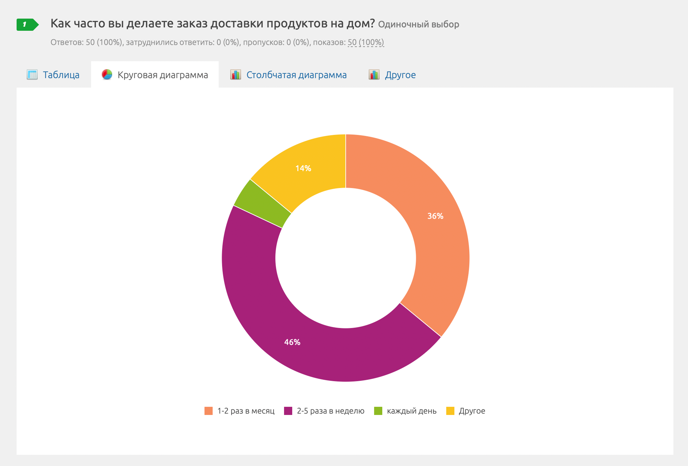
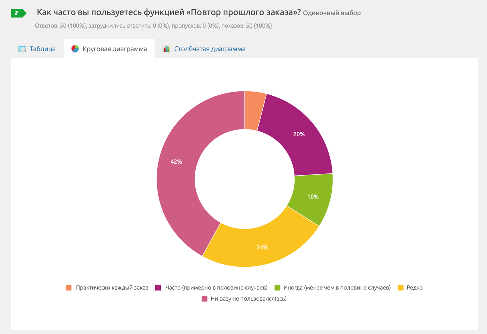
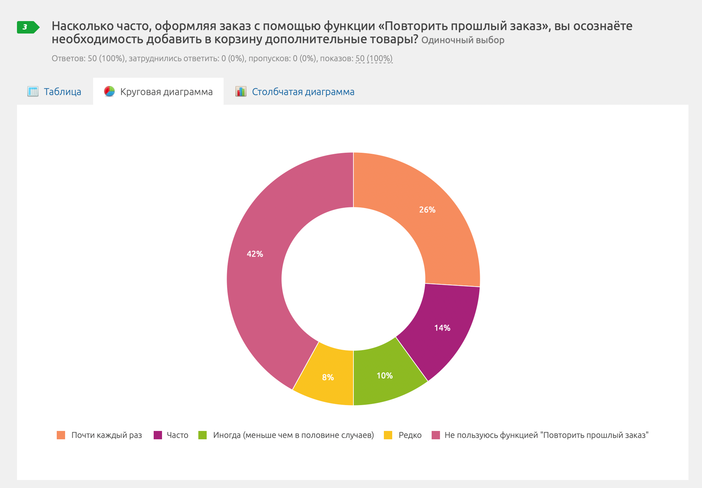
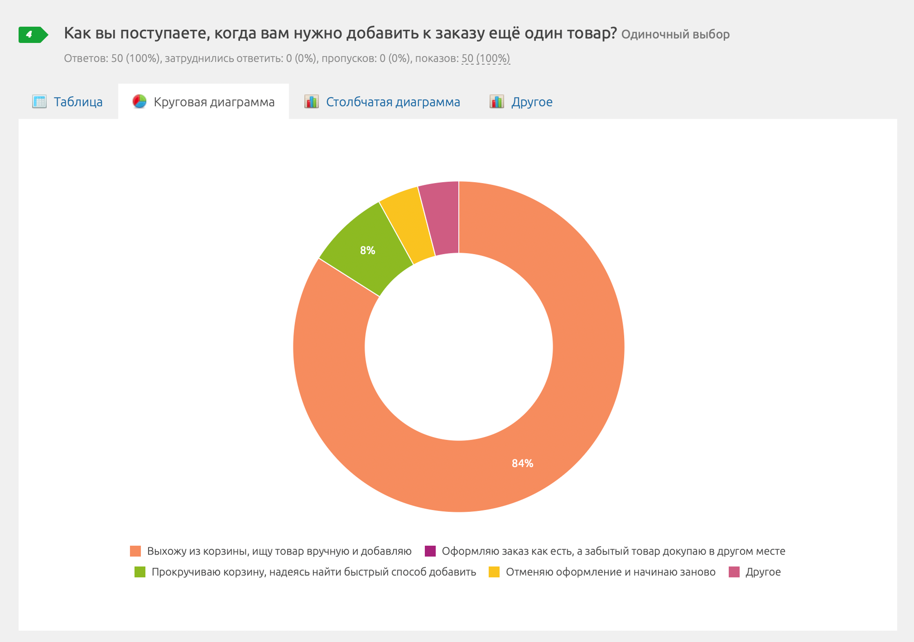
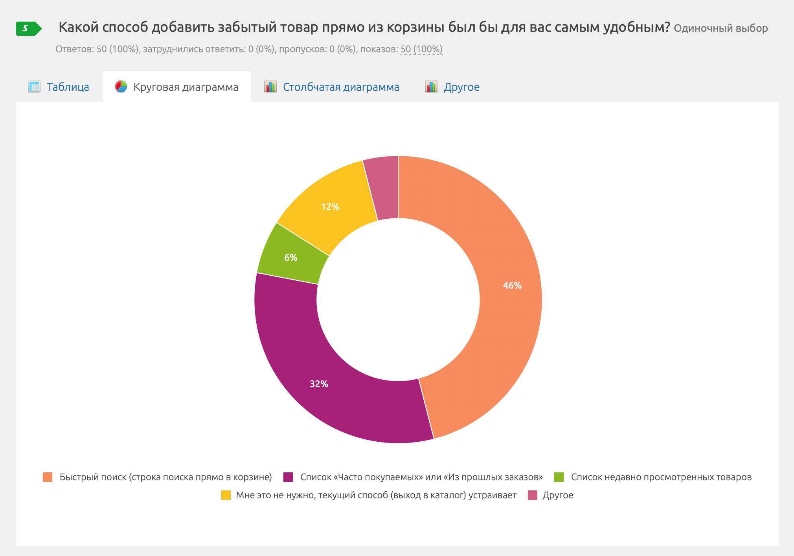
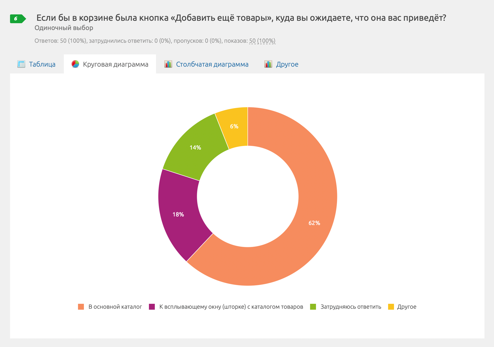
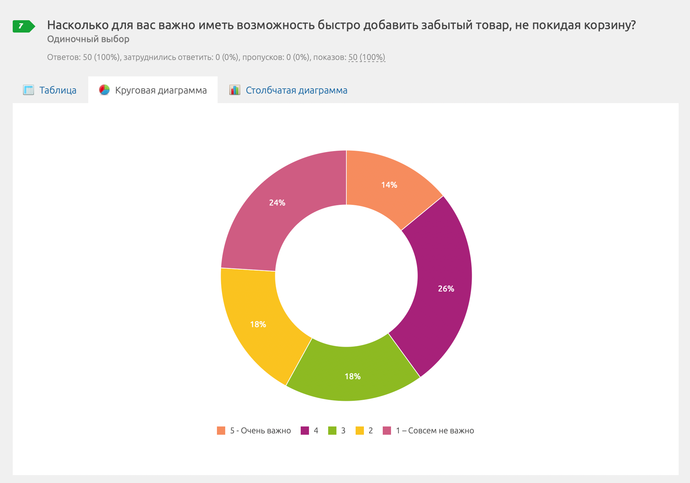
Результаты опроса Survey results
Регулярно заказывают доставку на домRegularly order grocery delivery
Пользуются функцией повторного заказа (часто/иногда)Use the reorder feature (often / sometimes)
При повторном заказе появляется необходимость дополнительно добавить что‑то в заказNeed to add something extra when reordering
Выходят из корзины, чтобы найти необходимый товар вручнуюLeave the cart to find a needed item manually
Отметили, что им важно быстро добавлять забытый товар в корзинуSay it's important to quickly add a forgotten item to the cart
Какие выводы и предположения я сделала после опроса? What conclusions and assumptions did I draw from the survey?
- 82% пользователей регулярно заказывают продукты на дом, поэтому, вероятно, в их корзинах часто встречаются товары из предыдущих заказов; 82% of users regularly order groceries for delivery, so their carts likely often contain items from previous orders;
- Пользователю приложения нужна возможность быстро добавить забытый товар в корзину. Следовательно, лучше минимизировать количество шагов, необходимых для этого; Users need to be able to quickly add a forgotten item to the cart — so it's worth minimising the number of steps that takes;
- Функция «Повторить заказ» не является основной для большинства пользователей. Возможно, следует упростить процесс добавления товаров в корзину для всех сценариев; The “Reorder” feature isn't the primary path for most users — it may be worth simplifying add‑to‑cart across every scenario, not just this one;
- Для бизнеса важно устранить существующие барьеры, так как они влияют на средний чек заказа и лояльность пользователей к приложению. For the business, it's worth removing these barriers, since they affect average order value and user loyalty to the app.
Контекст использования, цель работы
и критерий успехаContext of use, goal
and success criteria
ПользовательUser
Позволить быстро добавлять забытый товар в корзину в процессе оформления заказаLet the user quickly add a forgotten item to the cart during checkout
Сэкономить время и когнитивную нагрузку при взаимодействии с приложениемSave time and reduce cognitive load when interacting with the app
БизнесBusiness
Повышение лояльности пользователей, улучшение пользовательского опытаHigher user loyalty and a better overall experience
Повысить средний чек заказа для увеличения прибылиHigher average order value to grow revenue
ЦАTarget audience
Пользователи, которые стремятся сэкономить время при заказеUsers who want to save time when ordering
Пользователи, которые регулярно заказывают через приложение доставку продуктовUsers who regularly order grocery delivery through the app
Критерий успехаSuccess criteria
Сокращение шагов при добавлении товара в корзинуFewer steps to add an item to the cart
Достичь вовлечения в новую функцию как минимум 15% пользователейAt least 15% of users engage with the new feature
Анализ конкурентовCompetitor analysis
Для решения задачи имело смысл посмотреть, как конкуренты в сфере доставки продуктов решают вопрос с быстрым добавлением товаров в корзину. И решают ли они его вообще? It made sense to look at how competitors in grocery delivery solve the problem of quickly adding items to the cart — and whether they solve it at all.
Яндекс Доставка
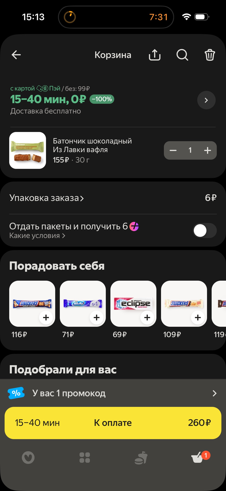
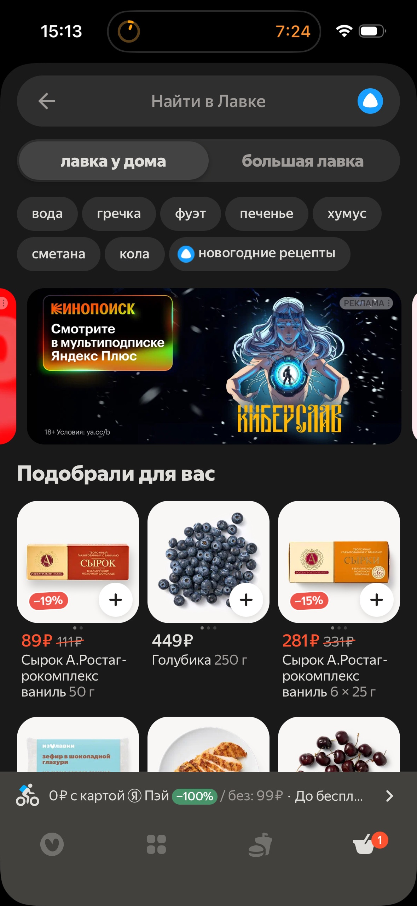
- В корзине есть функция «Поиск», открывающая страницу для поиска по каталогуThe cart has a “Search” feature that opens a catalogue search page
- Есть чипсы с определёнными товарами (принцип выдачи не понятен)There are quick-add chips for specific products (the selection logic isn't clear)
- В корзине есть подборка предложениями «Подобрали для вас»The cart has a “Picked for you” recommendations block
Лента (Доставка)
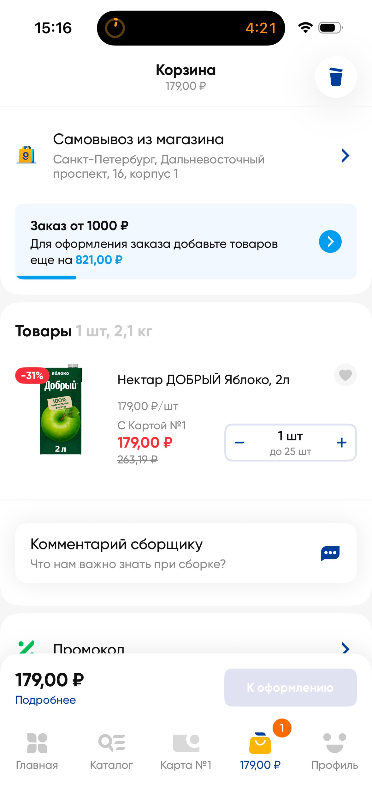
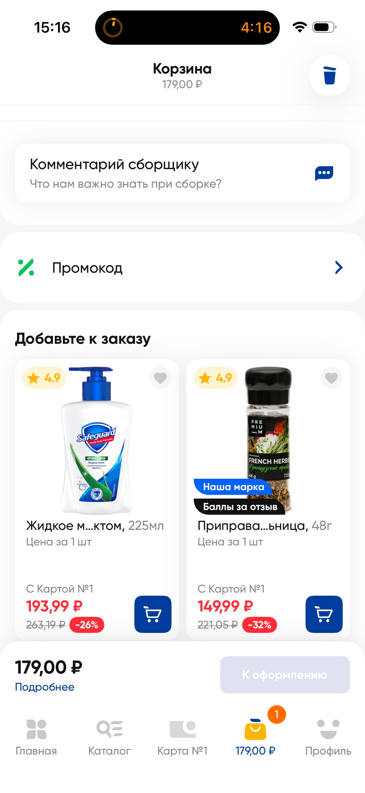
- В корзине нет никакого способа быстро добавить товар в корзинуThe cart has no way at all to quickly add an item
- Есть предложение «Добавить к заказу» с набором разных продуктовThere's an “Add to order” offer with a set of different products
Самокат
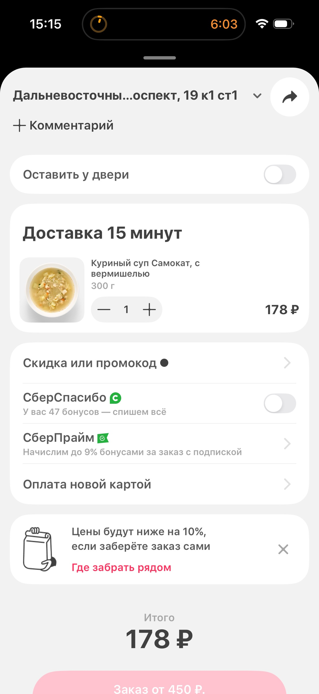
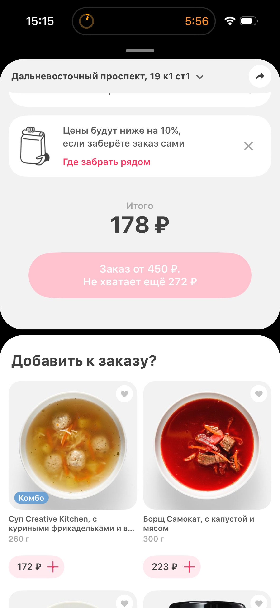
- В корзине нет никакого способа быстро добавить товар в корзинуThe cart has no way at all to quickly add an item
- Есть предложение «Добавить к заказу» с набором разных продуктовThere's an “Add to order” offer with a set of different products
Перекрёсток
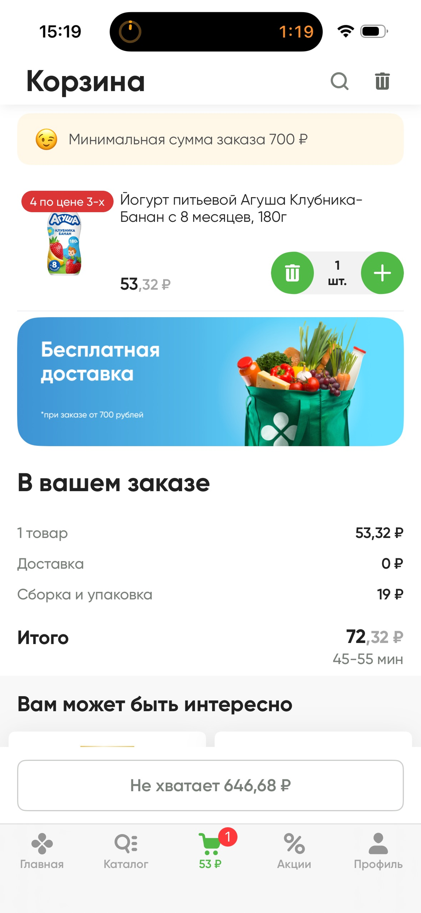
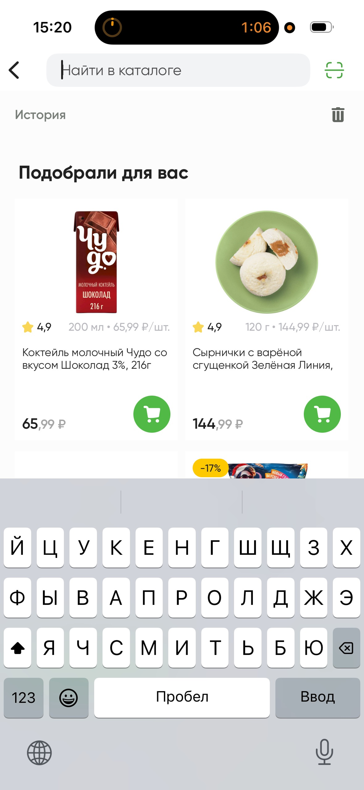
- В корзине есть функция «Поиск», открывающая страницу для поиска по каталогуThe cart has a “Search” feature that opens a catalogue search page
- В поиске нет никаких рекомендаций по предпочтениям или предыдущим заказамSearch shows no recommendations based on preferences or past orders
- В корзине есть подборка предложениями «Вам может быть интересно»The cart has a “You might like” recommendations block
Во всех исследуемых приложениях уже реализована функция по типу «Возможно, вам также понадобится». Она формируется на основе предпочтений пользователя, истории заказов или иных критериев. Это эффективно решает задачу бизнеса по увеличению среднего чека, а следовательно, и прибыли. Every app I looked at already has some version of a “You might also need” block. It's built from user preferences, order history or other criteria — and it works well for the business goal of raising average order value, and with it, profit.
Однако возможность быстро добавить конкретный, заранее известный товар есть не везде. А как уже показало исследование, эта функция важна для пользователей. Still, not every app lets you quickly add a specific, already-known item. And as the research showed, that's something users care about.
Решение и макетыSolution & mockups
Поскольку изменения были направлены на сценарий, когда пользователь уже находится в корзине, я начала разработку макетов именно с этого этапа. Since the changes targeted the moment the user is already in the cart, I started designing the mockups from exactly that step.
Повторный заказ Reordering
Анализ текущего user flow показал, что путь к повторному заказу через раздел «Профиль» уже является достаточно коротким, поэтому его решено было сохранить. Однако я внесла одно ключевое улучшение в логику процесса. The current user flow analysis showed that the path to reordering through the “Profile” tab is already short enough, so I kept it as is. Still, I made one key improvement to the process logic.
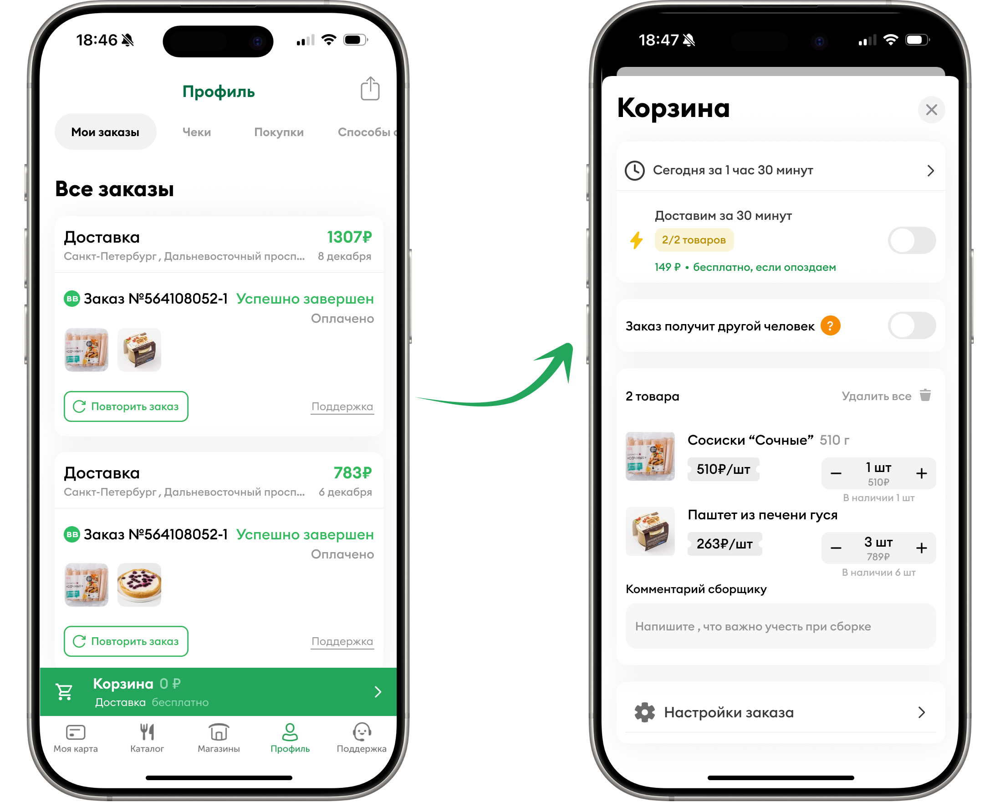
Было:Before:
При нажатии «Повторить заказ» товары добавлялись в корзину, но пользователь оставался на той же странице профиля, что могло приводить к непониманию, был ли заказ повторён. Tapping “Reorder” added the items to the cart, but the user stayed on the same profile page — leaving it unclear whether the order actually went through.
Стало:After:
При нажатии «Повторить заказ» товары моментально добавляются в корзину, а пользователь перенаправляется на страницу корзины для подтверждения и оформления. Tapping “Reorder” now instantly adds the items to the cart, and the user is taken straight to the cart page to confirm and check out.
Расположение кнопки «Добавить товары»Placing the “Add products” button
Для быстрого добавления товара в корзину я рассмотрела несколько вариантов её размещения: To let users quickly add an item to the cart, I considered a few placement options for the button:
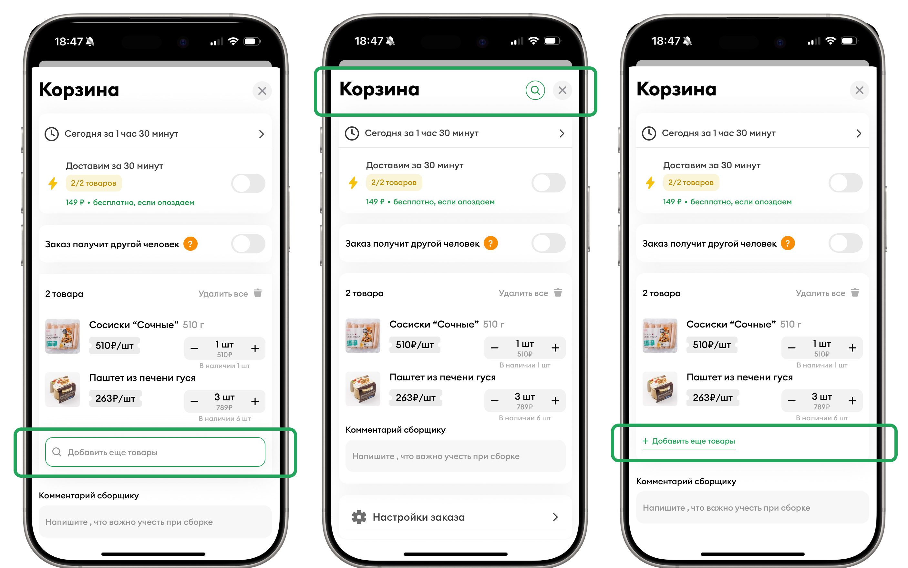
Для юзабилити-теста было принято
оставить два варианта, чтобы определить,
какой из них более заметен пользователю
For the usability test, I kept two variants —
to see which one users
would notice more easily
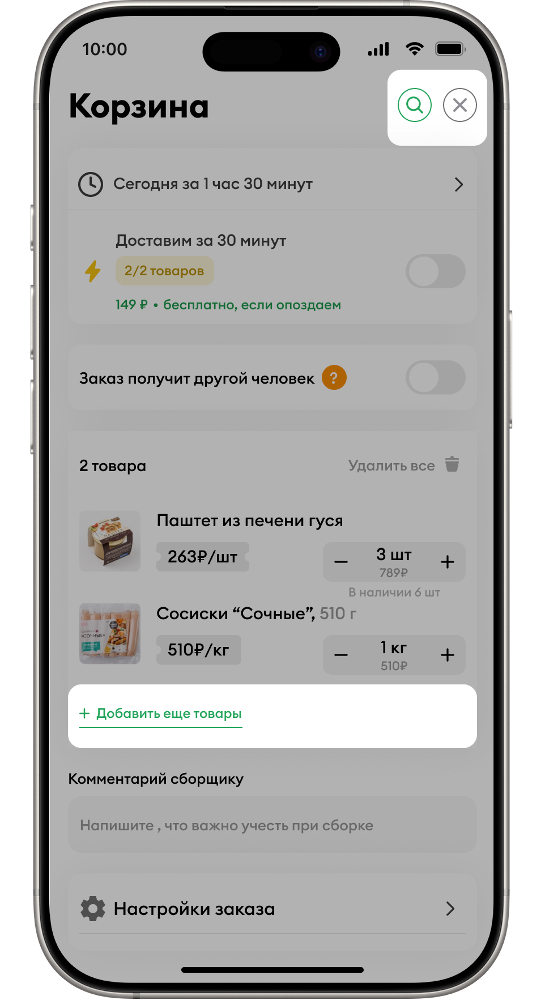
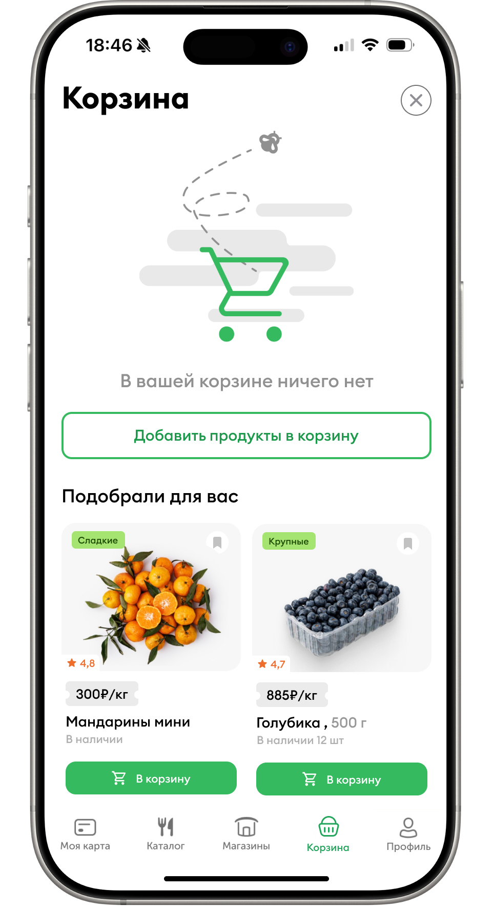
А ещё…One more thing…
Разработана страница пустой корзины, так как в действующем приложении пользователь не может попасть в корзину, не добавив туда хотя бы один товар. I also designed an empty-cart screen, since in the live app a user can't reach the cart at all without first adding at least one item.
Здесь же пользователь впервые видит кнопку «Добавить продукты в корзину». Это стратегическое решение — расширение точек входа в каталог. В ходе тестирования можно будет оценить заметность и эффективность этого нового пути. This is also where the user first sees the “Add products to cart” button — a deliberate move to widen the entry points into the catalogue. Testing will show how noticeable and effective this new path really is.
Как попасть в каталог? How do you reach the catalogue?
Помимо самой корзины важно было продумать и путь к каталогу — вот три сценария, которые я заложила в макеты. Beyond the cart itself, it was worth designing the path to the catalogue too — here are three scenarios I built into the mockups.
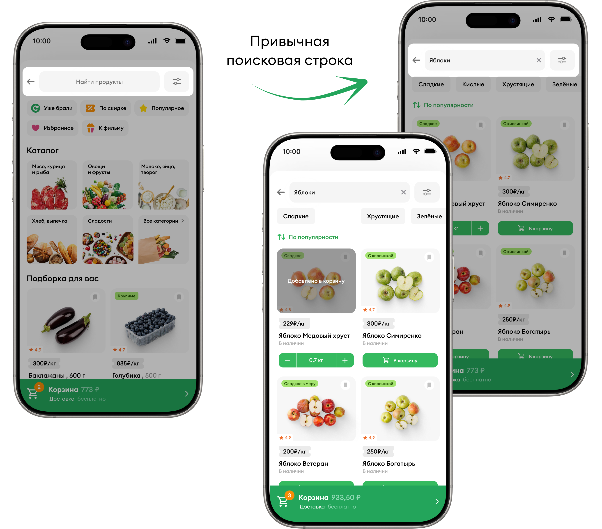
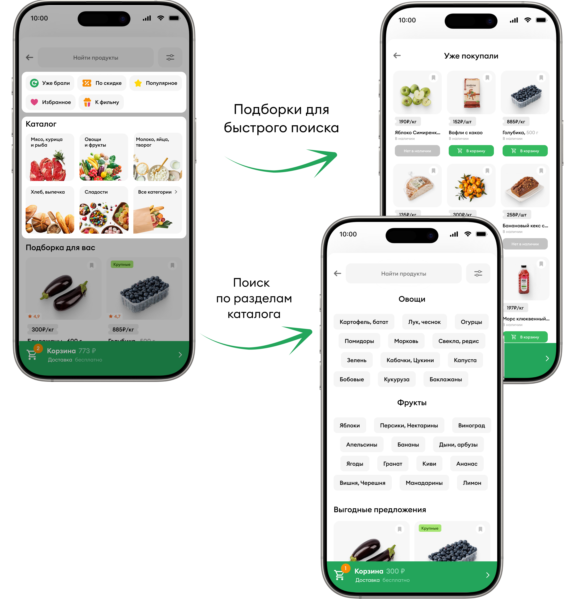
Юзабилити-тест Usability testing
Для проведения юзабилити-теста был разработан прототип и составлена легенда, по которой пользователь проходил новый флоу. To run the usability test, I built a prototype and wrote a script that walked participants through the new flow.
В тестировании участвовало 6 человек. Запись теста можно посмотреть тут. 6 people took part in the test. You can watch the recording here.
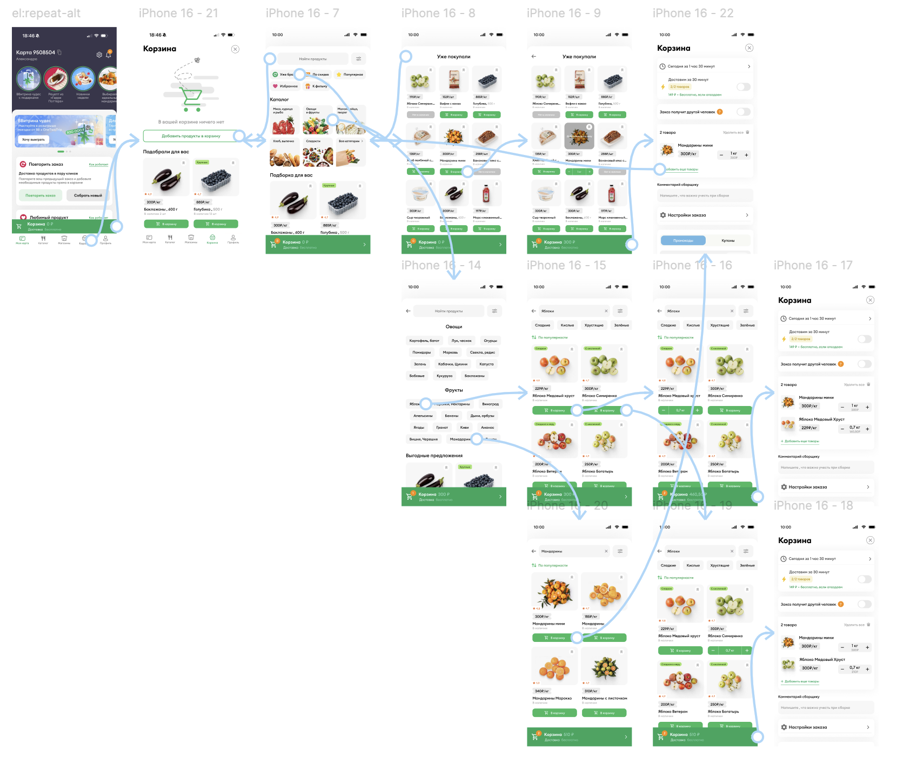
Что показал юзабилити-тест What the usability test showed
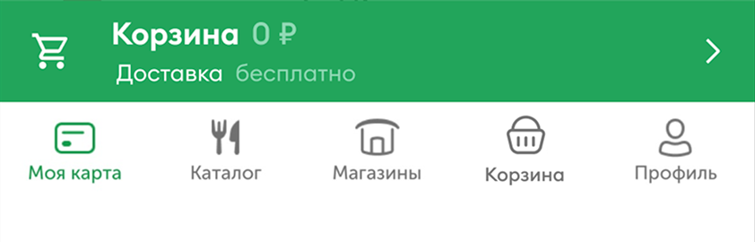
Эксперимент с иконкой корзины в панели навигации не дал ожидаемого эффекта — пользователи её игнорировали и продолжали пользоваться привычным путём в корзину. The experiment with a cart icon in the bottom nav didn't have the expected effect — users ignored it and kept using their usual path to the cart.
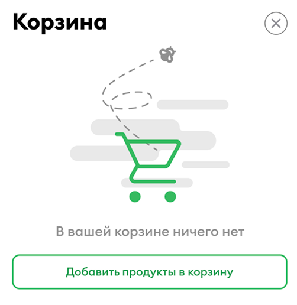
Сценарий быстрого добавления товаров подтвердился: 4 из 6 пользователей (66,6%) сразу заметили целевую кнопку и использовали её по назначению. The quick-add scenario was confirmed: 4 of 6 users (66.6%) immediately noticed the target button and used it as intended.
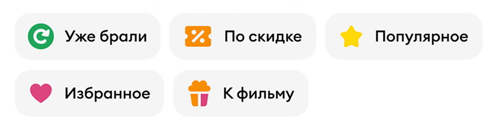
Функция «Уже брали» оказалась полезной: две трети пользователей (66,6%) использовали её, чтобы быстро добавить в корзину товары из истории заказов. The “Already bought” filter proved useful: two-thirds of users (66.6%) used it to quickly re-add items from their order history.
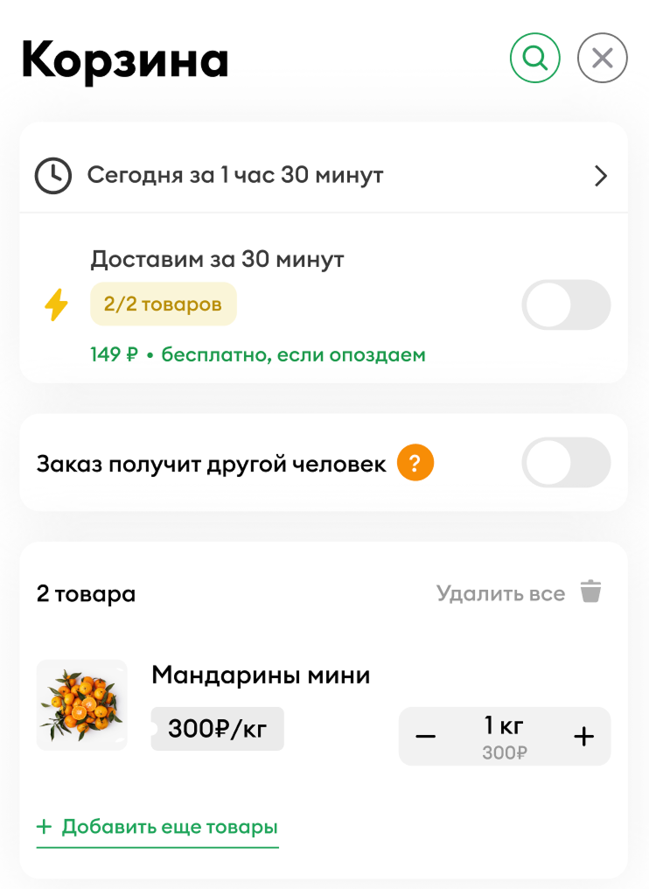
Кнопку «Добавить ещё товары» заметили и использовали все участники теста (100%). The “Add more items” button was noticed and used by every participant (100%).
Значок поиска (лупа) в шапке корзины остался практически незамеченным — им ни разу не воспользовались спонтанно. The search icon in the cart header went almost unnoticed — nobody used it spontaneously.
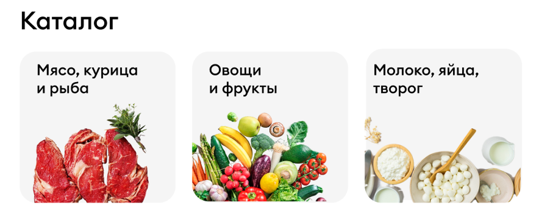
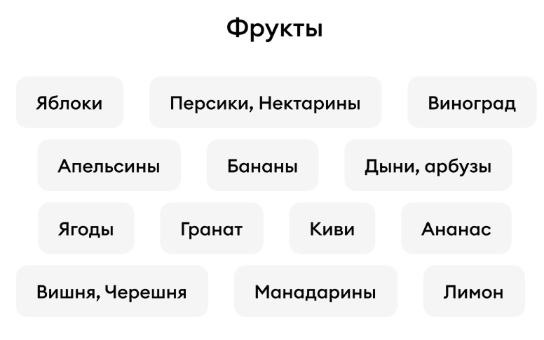
Категории каталога оказались интуитивно понятны всем пользователям. Более того, 5 из 6 респондентов самостоятельно применяли быстрые фильтры, чтобы уточнить поиск. The catalogue categories were intuitive for everyone. Moreover, 5 of 6 participants used the quick filters on their own to narrow their search.
Прогноз эффективностиImpact forecast
Ниже — не измеренный результат, а направление эффекта: как предложенные изменения должны повлиять на ключевые метрики продукта, исходя из логики самих решений. What follows isn't a measured result — it's the direction of the effect: how these changes should move the product's key metrics, based on the logic of the solutions themselves.
Лояльность и удержание (Retention)Loyalty & retention
Сокращение количества шагов и точек фрустрации в ключевом сценарии и в сценарии повторного заказа делает сервис удобнее — а значит, повышает вероятность, что пользователь вернётся снова. Fewer steps and less friction in the core scenario and the reorder scenario make the service more convenient — which raises the odds a user comes back.
AOV (Средний чек)AOV (average order value)
Устранение барьера для добавления забытых и импульсных товаров напрямую увеличивает количество позиций в корзине — а вместе с ним и сумму заказа. Removing the barrier to adding forgotten or impulse items directly increases the number of items in the cart — and with it, the order total.
LTV (Долгосрочная ценность)LTV (customer lifetime value)
Рост Retention и AOV в совокупности повышает долгосрочную ценность каждого клиента. Combined growth in retention and AOV raises the long-term value of each customer.